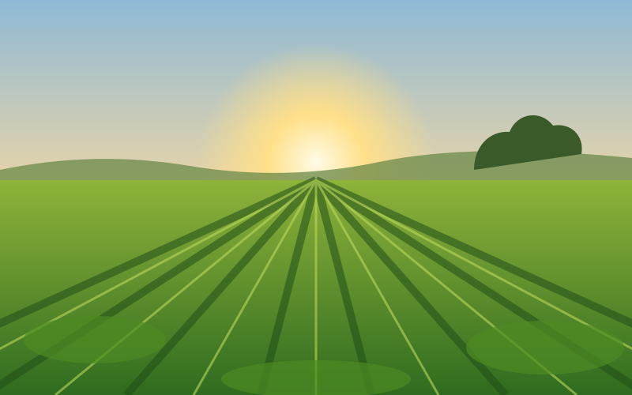

Tecnologia a favor do seu cultivo
Plataforma simples e acessível para ajudar agricultores a planejar, monitorar e cuidar da sua plantação.
Conheça a plataforma
Espaço reservado para o Pitch Vídeo
Adicione o arquivo
assets/videos/pitch.mp4 para exibi-lo aqui.
Assista ao nosso vídeo
Conheça a proposta do AgroTech: aproximar tecnologia e informação de quem produz, apoiando a agricultura familiar no combate à fome.